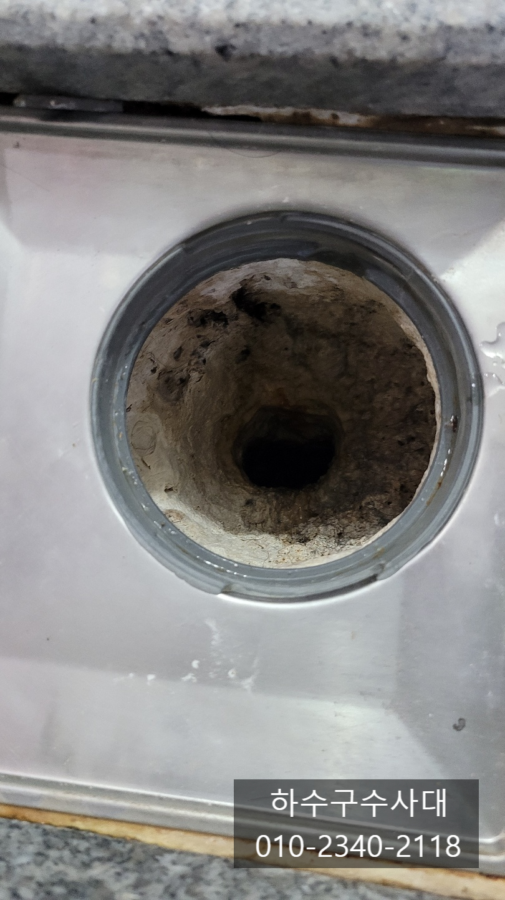
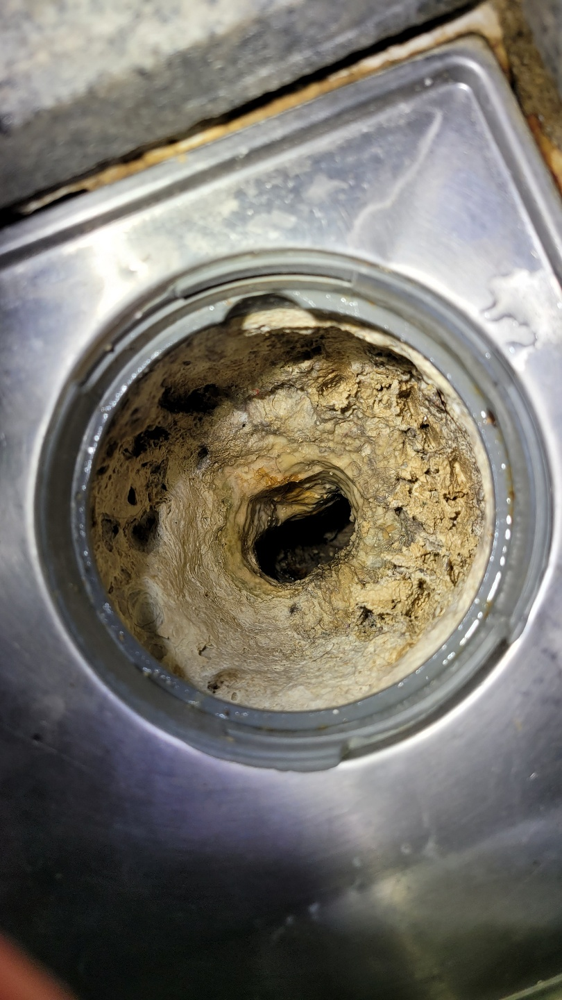
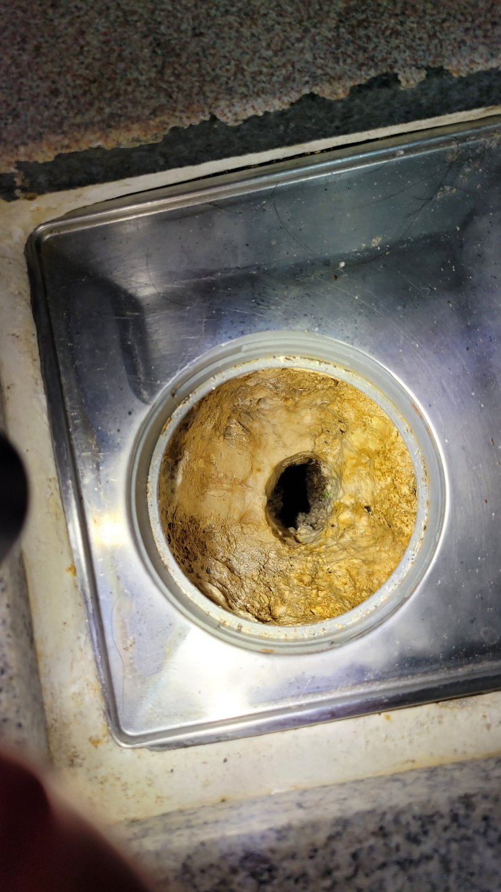
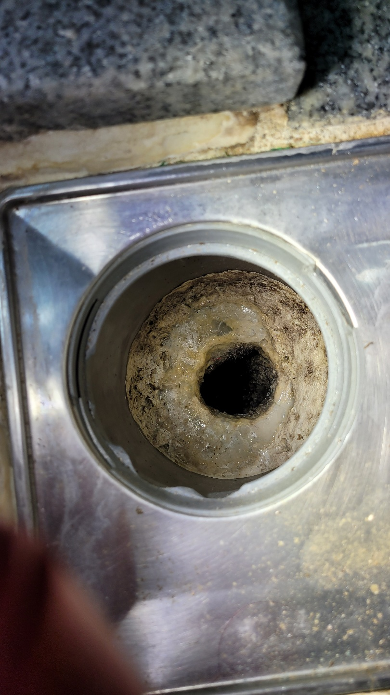
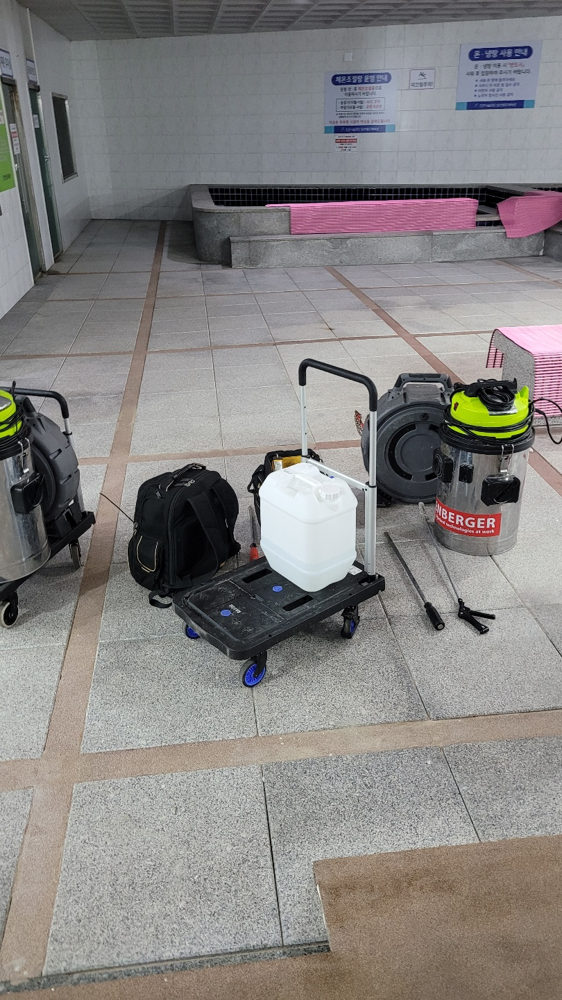
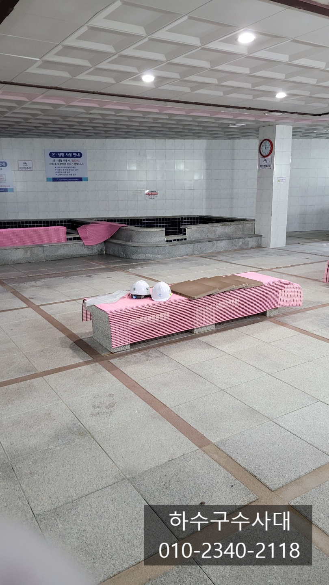
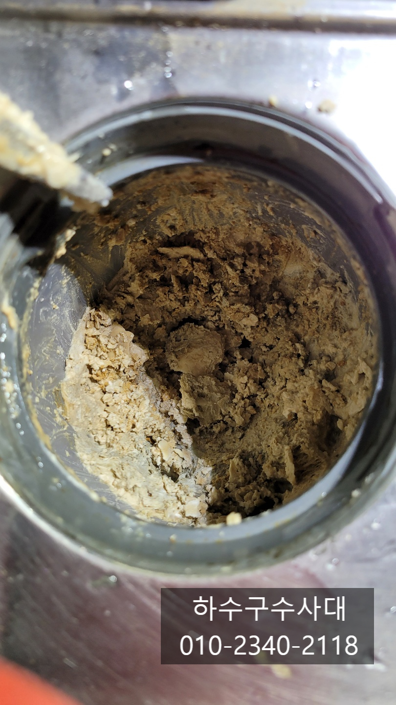

🏠 목욕탕 샤워실 욕실 하수구 석회제거 방법
서울 하수구막힘 전문 시공 후기

📋 작업 개요
- 위치: 서울
- 서비스 유형: 하수구막힘, 배관막힘, 뚫는업체
- 작업 일시: 2021. 10. 13. 9:42
- 업체명: 하수구수사대 (010-5615-2118)
🔍 문제 상황
샤워실 욕실 하수구 석회제거방법
안녕하세요.
슬기로운하수구생활입니다.
오늘 포스팅현장은 부평구에 위치한 삼산월드체육관 내부에
있는 목욕탕 석회제거를 하고 왔습니다.
여자 샤워실과 남자샤워실 두군데중에
여자샤워실 위주로 제거 작업을 진행하였습니다.
목욕탕 샤워실 욕실 하수구 석회제거 방법
특히 여자샤워실 하수구에 석회가 많이 있었는데
아무래도 남자보다는 여자분들이 바디워시,비누,샴푸를
많이 쓰다보니 석회가 많은 것으로 추측됩니다.
이처럼 배관에 석회가 쌓이는 이유는 비누,샴푸,바디워시등
거품을 충분히 물로 흘려 보내주지 않고
배관에 거품이 남아있어 석회성분이 쌓이게되면
딱딱한 돌처럼 바뀌게 됩니다.
흔히 가정집 욕실에서도 많이 나타나는 현상이에요.
규모가 크다보니 하수구 구멍도 많은데
심한곳은 물이 차오를 정도로 막혀있습니다.
가정집 욕실도 마찬가지지만 하수구 구멍이
막혀 물이 내려가지 않으면 그 주변에 웅덩이처럼
물이 고이게 됩니다.

🔎 원인 분석
💡 전문가 진단: 하수구수사대 010-2340-2118
기울기를 주어 하수구로 흘러나가기 때문인데요
웅덩이가 생기면 이만저만 불편하고 안전사고 우려도
있어 석회를 모두 제거하는 작업을 해야합니다.
작업전 담당자분에게 안전교육도 받고 안전모도 받았는데
앉아서 하는작업위주 이다보니 안전모는
필요가 없겠죠? ㅎㅎ
코로나시대가 장기화되면서 이곳 삼산월드체육관도
운영이 중단된지 오래 되었답니다.
아무래도 여러사람이 모이는 공간이다보니
감염의 우려가 많은 공공시설은 모두
중단 되었을것입니다.
아마도 백신 접종률이 높아지고 위드코로나시대가
되면 공공시설도 모두 오픈준비를 하는것 같습니다.
인근주민들도 체육시설을 이용하지 못해 여간 답답하지
않을수 없었을텐데 하루 빨리 일상으로
회복 되었으면 합니다^^
우선 가까운곳은 드라이버로 배관이 손상가지 않게
깨고 긁어주는 작업을 진행합니다.
배관크기도 크다보니 석회의 양도 어마어마해요.
배관에서 떨어진 석회들은 모두 석션으로 흡입하여
제거 해주는데 석회 크기가 크다보니
석션호스에 끼면 빼고 끼면 빼고 하는작업을

🔧 작업 과정
반복해줍니다. 석회제거는 일반적으로 뚫는작업
보다는 반복적인 노동이 많이 필요합니다^^
하수구수사대
010-2340-2118
석회가 딱딱하기 때문에 약품을 쓰는경우도
있는데 석회전용약품을 쓰게 되면 딱딱해진석회가
조금은 부드러워져 제거하기가 좀 더 수월해지는데
약품을 쓰는 이유는 배관에 무리를 주지 않기 위함입니다.
아무래도 잘 깨지지 않으면 힘을 가하기 때문에
잘못하면 배관에 구멍이나 크랙이 갈수도 있기때문에
조심히 작업을 진행해야해요.
위 영상은 배관 깊숙한곳에 있는 석회를
제거하는 작업이에요.
눈에보이는 가까운곳은 긴 드라이버로 제거할수 있지만
배관 깊숙한곳이 있는 석회는 전문장비가
필요합니다. 또한 배관깊숙한곳에서 떨어지만
흡입하는 석션장비도 필수입니다.
배관에 떨어진 석회를 뽑아내지않으면
오히려 막힘증상이 더 심지질수 있어요.
마찬가지로 배관에 붙은 석회는 잘 떨어지지 않기때문에
반복적으로 장비를 돌려 조금씩 깨는 작업을
진행해 나갑니다.
석회양이 어마어마합니다. 머리가락과 엉겨있기도하고
배관모양의 덩어리가 나오기도 합니다.
하수구에 석회가 있어 막힌다면 뚫는 작업을
하기보다는 석회는 모두 제거해 주는것이 좋아요.
석회때문에 좁아진 구멍에 머리카락이나 이물질때문에
꽉막히게 되는데 이물질만 빼내면 얼마안가
또 막히게 됩니다.
특히 가정집 욕실하수구에 석회가 많으면
한번작업할때 제대로 제거해 주는것이 좋습니다.
배관에 석회를 덜 끼가 하려면 거품을
물로 씻어 충분히 내려보내 줘야해요.
하지만 이처럼 공공시설은 대중들이 이용하다보니
한사람한사람 사용법이 달라 지켜지기는


✅ 작업 완료
쉽지 않겠네요.
작업전후 사진이 확실합니다
목욕탕 하수구석회를 모두 제거후 담당자와 확인절차를
걸쳐 작업을 무사히 마치게 되었습니다.
무심히 지나칠수 있는 하수구 인데요.
관리를 하지않으면 생활의 불편함이 서서히
찾아오기때문에 가끔 하수구도 관리해주시는것이
좋을거 같습니다.
서울,경기,인천 전지역




⚠️ 하수구 배관 막힘 예방 및 관리 가이드
- ✅ 머리카락, 비닐, 물티슈 등 물에 분해되지 않는 이물질은 하수구 유입을 절대 금지해 주세요.
- ✅ 하수구 거름망을 씌우고 모여진 이물질은 주기적으로 쓰레기통에 바로 비워주셔야 합니다.
- ✅ 배관 노후가 심할 경우 이물질이 더 쉽게 걸리므로 주기적인 배관 세척(고압세척 등)을 권장합니다.
- ✅ 작업 후 1년 이내 재발 시 하수구수사대에서 무상 A/S 보증 서비스를 제공합니다.
💡 핵심 정리
- 확실한 장비 작업(내시경 점검 및 샤프트 스케일링)으로 원인을 뿌리 뽑습니다.
- 작업 후 1년 이내에 동일한 부위 재발 시 100% 무상 A/S 서비스를 보장합니다.
- 서울 · 경기 · 인천 전 지역에 24시간 언제든 긴급 출동할 수 있도록 항시 대기 중입니다.
❓ 자주 묻는 질문 (FAQ)
🚨 서울 하수구막힘 문제로 고민이신가요?
정확한 원인 진단과 확실한 시공으로 재발 없는 해결을 약속드립니다.
24시간 긴급 출동 | 서울 · 경기 · 인천 전지역 | 1년 내 재발 시 무상 A/S